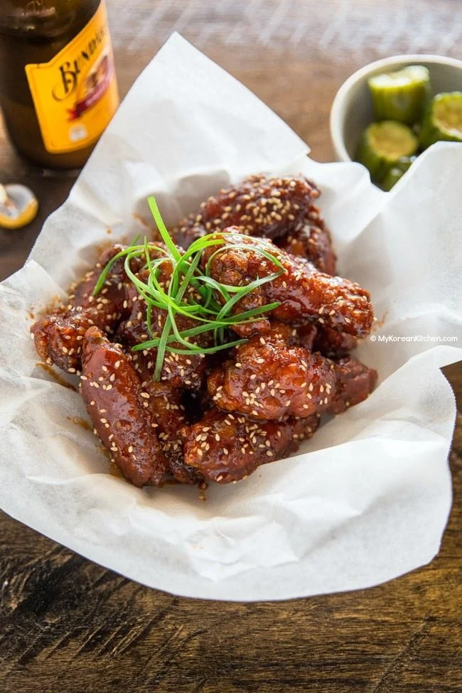

Korean Fried Chicken

Decription
How to make sweet, spicy and sticky Korean fried chicken! It's super crunchy and hugely addictive!
Ingredients
- Chicken
- Cornstarch
- Gochujang
- Cooking Oil
- Seasoning
Steps
- Cut chicken into even pieces
- Coat the chicken with cornstarch and seasoning
- Fry chicken for about 20 minutes flipping halfay.
- Take chicken out of pot and toss in Gochujang sauce.